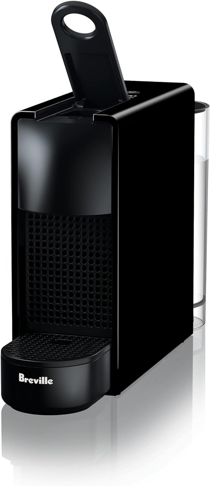

Why Nespresso?
Choosing Nespresso offers numerous advantages that cater to coffee enthusiasts seeking high-quality, convenient, and sustainable coffee experiences. Here are several reasons why one might choose Nespresso:
Quality Coffee: Nespresso is renowned for its commitment to providing exceptional coffee. They meticulously select the finest coffee beans from globally renowned regions, ensuring premium quality and a diverse range of flavors.
Innovative Brewing Technology: Nespresso coffee machines are equipped with cutting-edge technology, designed to extract the best flavors and aromas from each coffee capsule. The machines offer a consistent and superior brewing experience with various options to cater to individual preferences.
Convenience and Simplicity: Nespresso machines offer an effortless and user-friendly coffee brewing experience. With a simple push of a button, you can enjoy a barista-quality coffee at home, saving time and effort.
Variety of Coffee Options: Nespresso provides a wide array of coffee blends and flavors, catering to different taste profiles. Whether you prefer an intense espresso or a mild lungo, there's a coffee option for everyone.
Ultimately, choosing Nespresso goes beyond the exceptional quality of coffee. It's about convenience, sustainability, and being part of a community dedicated to a superior coffee experience, making it an attractive option for coffee lovers worldwide.
Other Coffee Selections